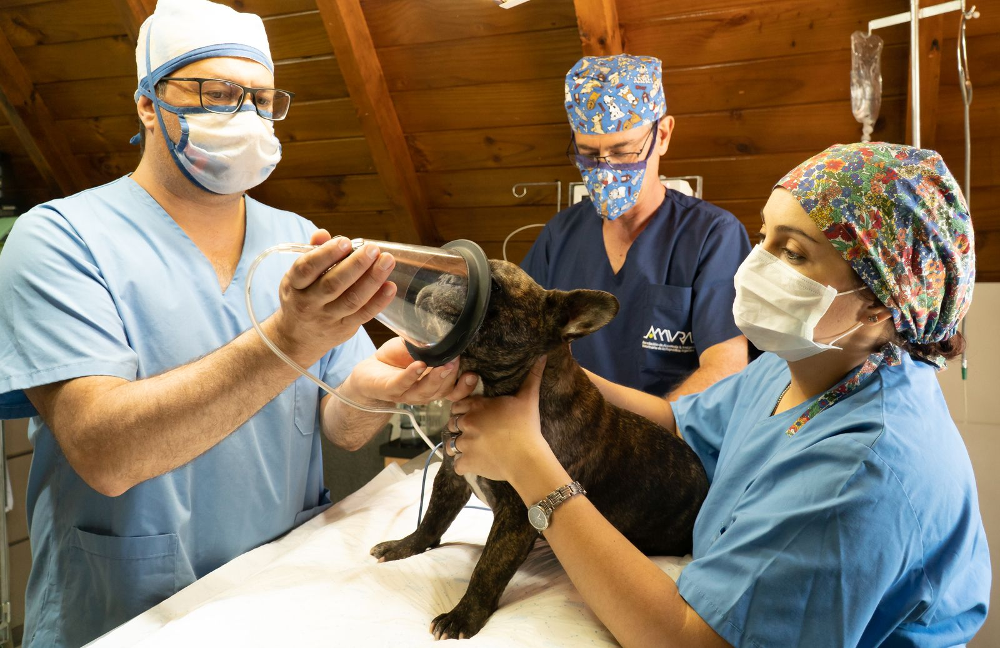
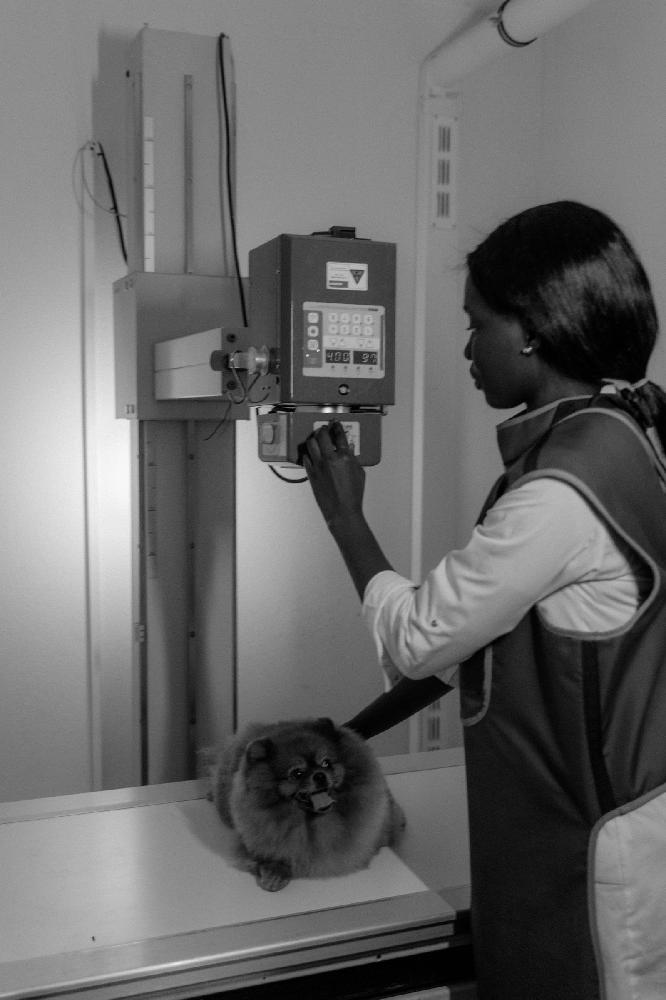
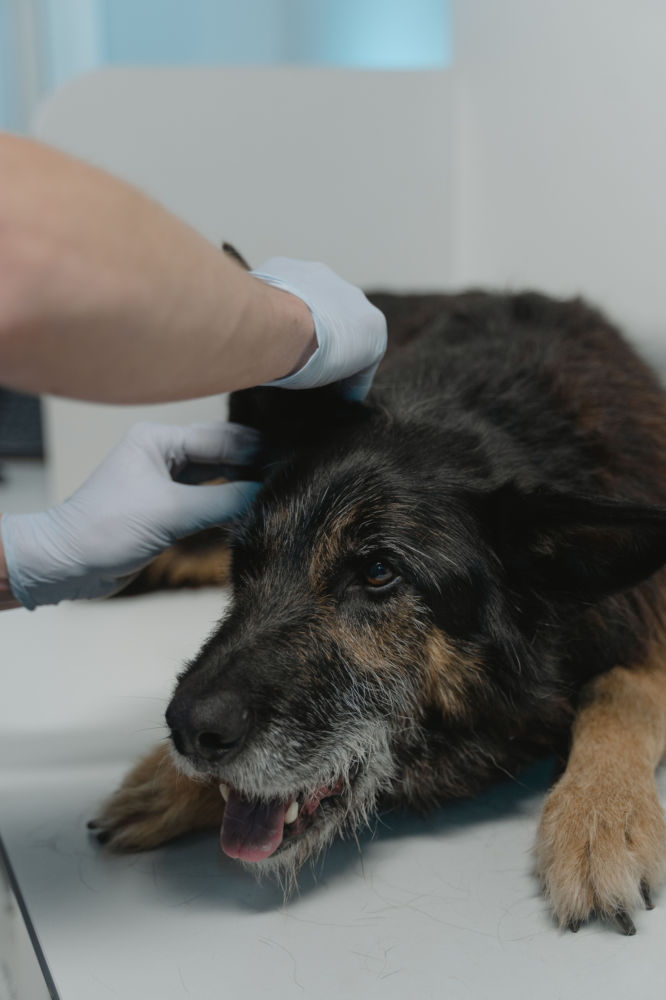
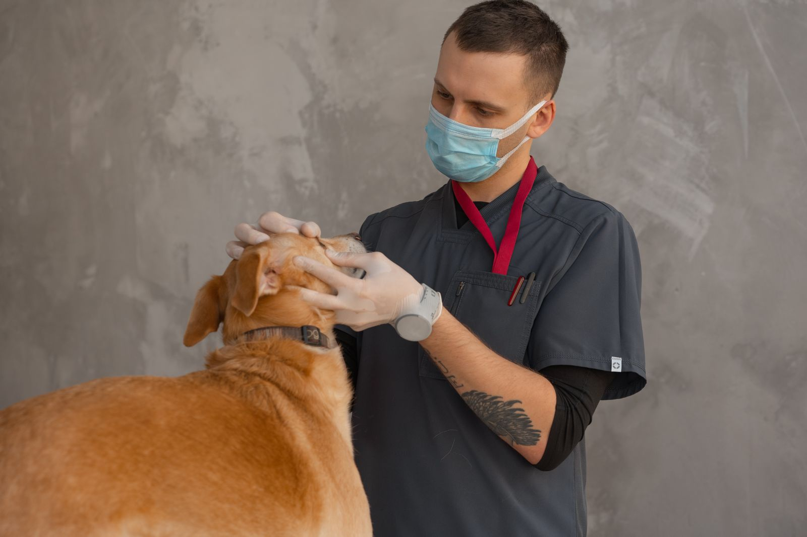

EXPERTISE CHIRURGICALE
Chirurgie spécialisée
Consultations spécialisées et prise en charge chirurgicale, des interventions courantes aux situations les plus complexes.
ExplorerExpertises chirurgicales · Chiens et chats
CHAL’VET accueille les patients adressés par leur vétérinaire traitant pour une prise en charge chirurgicale adaptée et coordonnée.

Consultations spécialisées et prise en charge chirurgicale, des interventions courantes aux situations les plus complexes.
Explorer
Radiographie numérique à capteur plan et scanner permettant des reconstructions tridimensionnelles, en appui à l’exploration, au diagnostic et à la planification.
Explorer
Affections chirurgicales de la colonne et de la moelle épinière : hernies discales, instabilités, traumatismes et malformations rachidiennes.
Explorer→
Précision · Sécurité · Coordination
La chirurgie conventionnelle ou vidéo-assistée est choisie en fonction des besoins du patient. Les moyens d’imagerie contribuent à une évaluation anatomique précise et à une intervention mieux préparée.
Visuels d’ambiance issus des assets du projet ; leur usage final reste à valider.
Pour les vétérinaires référents
Consultez les étapes et les modalités d’adressage à confirmer avec la clinique.